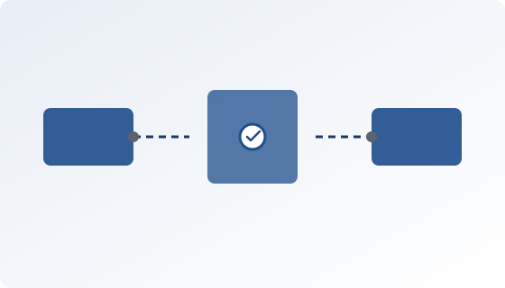
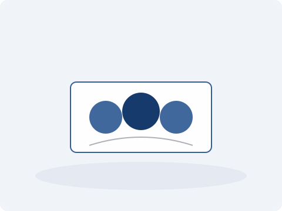

Soluções que impulsionam o seu negócio
A Async Tecnologia é uma empresa brasileira de desenvolvimento de software focada em soluções de integração e automação de processos para negócios em crescimento. Fundada com o propósito de eliminar gargalos operacionais causados por sistemas legados e fluxos de trabalho manuais, a empresa atua principalmente nos segmentos de fintechs, e-commerce e startups B2B.
Faça parte da Inovação
Sobre nós
A Async Tecnologia é uma empresa brasileira de software especializada em integração de sistemas e automação de processos. Desenvolvemos soluções que conectam plataformas, APIs e ferramentas internas para que as operações da sua empresa funcionem de forma contínua e eficiente.
Trabalhamos com empresas que precisam escalar sem aumentar a complexidade operacional. Nossa abordagem técnica é baseada em arquiteturas orientadas a eventos, o que garante sistemas resilientes, desacoplados e preparados para crescer.
Nosso compromisso é entregar integrações confiáveis, no prazo e com suporte próximo do diagnóstico à implementação.
Async Tecnologia integrações que funcionam.

Serviços
-

Integração de sistemas
Conectamos ERPs, CRMs, gateways de pagamento e bases legadas com pipelines estáveis e monitoráveis.
-
Automação de processos
Eliminamos tarefas repetitivas com fluxos orientados a eventos e integrações em tempo quase real.
-
APIs e microsserviços
Desenhamos contratos de API, versionamento e camadas de integração prontas para escalar com o seu produto.
Contato
Entre em contato com a nossa equipe e descubra como podemos conectar e otimizar os sistemas da sua empresa.
E-mail: contato@asynctecnologia.com.br
telefone: (11) 99999-9999
Endereço: Av. Paulista, 1000 — São Paulo, SP
Horário de atendimento:
Segunda a sexta, das 9h às 18h